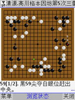

JAVA版五子棋打谱软件YYGO_WZQ发布
#1 JAVA版五子棋打谱软件YYGO_WZQ发布 作者：小丸.net 发表时间：2011-10-23 18:55:49

经过半个月的努力，YYGO的作者将围棋打谱软件YYGO进行了修正，让他符合了五子棋打谱的标准，目前五子棋打谱软件已经可以在可以使用JAVA的手机上使用。
 点击这里下载JAVA打谱软件
点击这里下载JAVA打谱软件1.可以打开国际标准SGF棋谱，获得国际SGF棋谱请使用“五子妙手V2011 SP2版”
2.可以保存为SGF棋谱，并可以使用“五子妙手V2011 SP2版”进行打开
［此帖子已被 小丸.net 在 2011-10-23 18:56:38 编辑过］
［ 梧桐风 于 2011-10-23 20:30:11 时花20金币送鲜花一朵］
［ 梧桐风 于 2011-10-23 20:30:13 时花20金币送鲜花一朵］
［ 梧桐风 于 2011-10-23 20:30:16 时花20金币送鲜花一朵］
［此帖子已被 小丸.net 在 2011-10-23 20:31:24 编辑过］
［ 一侠客一 于 2011-10-24 20:40:52 时花20金币送鲜花一朵］
#2 Re:JAVA版五子棋打谱软件YYGO_WZQ发布 作者：梧桐风 发表时间：2011-10-23 19:19:52
沙发！是19路的？［此帖子已被 梧桐风 在 2011-10-23 19:30:39 编辑过］
#3 Re:JAVA版五子棋打谱软件YYGO_WZQ发布 作者：梧桐风 发表时间：2011-10-23 19:42:09
挺好用的，鉴定完毕～要新建文件时，先点“浏览棋谱”，然后设置成15路的，找了半天……#4 Re:JAVA版五子棋打谱软件YYGO_WZQ发布 作者：掌棋如烟 发表时间：2011-10-23 21:17:11
我得，先买个手机去。。。#5 Re:Re:JAVA版五子棋打谱软件YYGO_WZQ发布 作者：蓝天蓝 发表时间：2011-10-23 22:19:11
引用：那我先不下载了
原文由 掌棋如烟 发表于 2011-10-23 21:17:11 :
我得，先买个手机去。。。
#6 Re:JAVA版五子棋打谱软件YYGO_WZQ发布 作者：孙弈淏 发表时间：2011-10-24 8:26:11
谁有现成的sgf五子棋谱，发上来共享下。
先上鲜花
#7 Re:JAVA版五子棋打谱软件YYGO_WZQ发布 作者：有志青年 发表时间：2011-10-24 13:21:25
==============================
此帖内容被屏蔽!
==============================
［此帖子已被 有志青年 在 2011-10-24 20:46:50 编辑过］
#8 Re:JAVA版五子棋打谱软件YYGO_WZQ发布 作者：小丸.net 发表时间：2011-10-24 20:44:21
==============================
此帖内容被屏蔽!
==============================
［此帖子已被 有志青年 在 2011-10-24 20:47:17 编辑过］
#9 Re:JAVA版五子棋打谱软件YYGO_WZQ发布 作者：小丸.net 发表时间：2011-10-24 20:45:11
PS:软件厂商说，只要有一个人在用，就会有需求，就会有市场。#10 Re:JAVA版五子棋打谱软件YYGO_WZQ发布 作者：黑白之巅 发表时间：2011-10-29 13:25:07
屏幕白茫茫的一片，唉，垃圾手机就是不靠谱
#11 Re:JAVA版五子棋打谱软件YYGO_WZQ发布 作者：一盏幽冷 发表时间：2011-11-25 20:09:00
一直想将lib转为sgf，救命啊#12 Re:JAVA版五子棋打谱软件YYGO_WZQ发布 作者：极地剑客 发表时间：2012-1-31 19:19:16
打开每次都要设置19路棋盘为15路~还要把贴目7.5改成0.汗#13 Re:JAVA版五子棋打谱软件YYGO_WZQ发布 作者：哈凌凌 发表时间：2012-5-9 14:34:02
手机保存读取没问题，传到电脑上就打不开了。renlib和妙手支持sgf格式，但只有妙手可以另存为sgf，再用yygo确是打不开？！求帮助